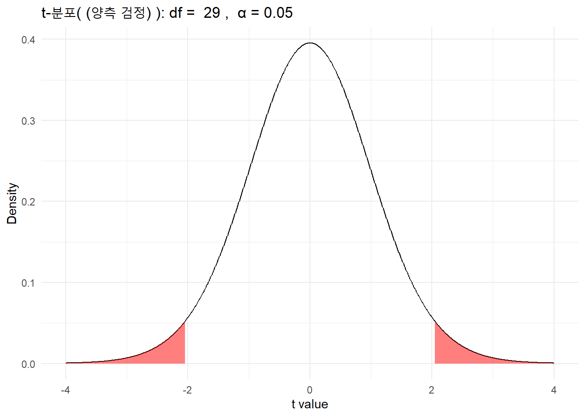
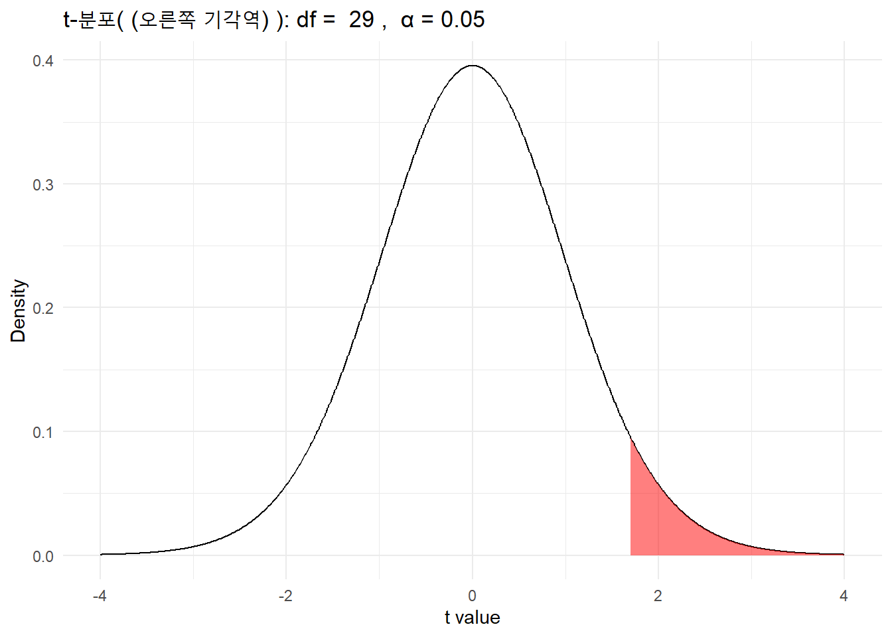
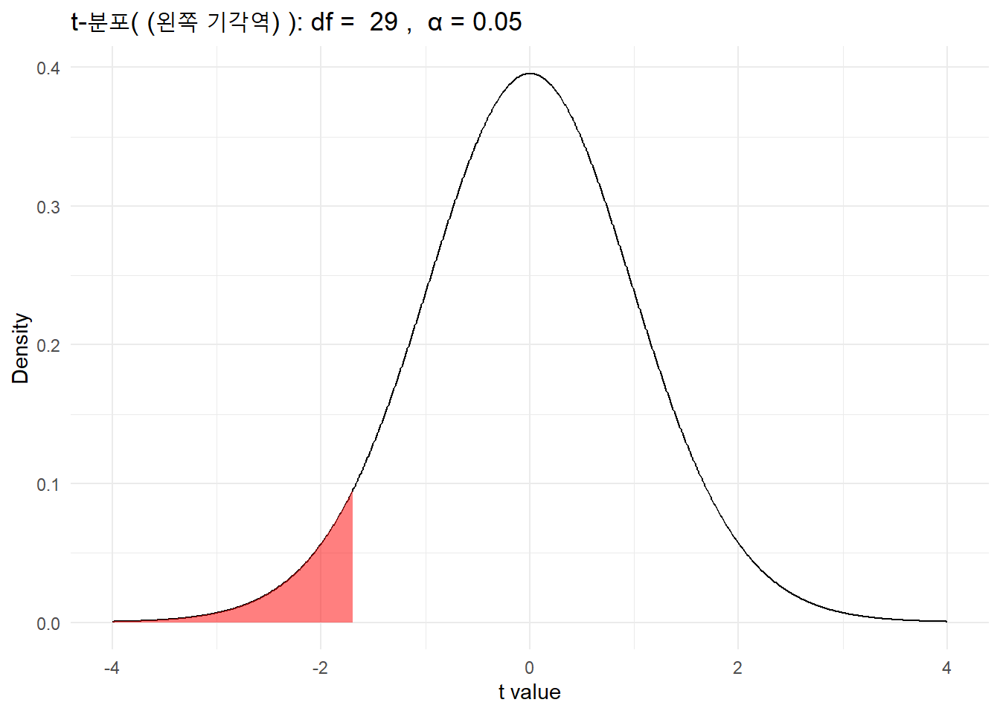
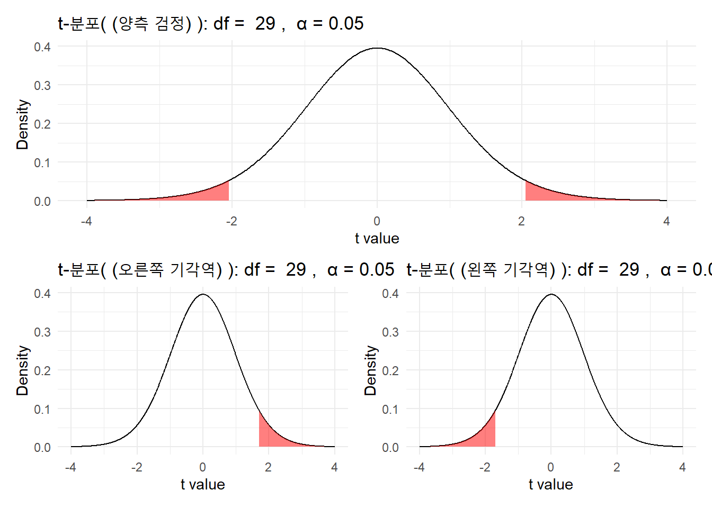

library(broom)
# 맥아에서 추출된 당의 양 데이터 (가상)
malt_sugar <- c(3.0, 3.0, 2.9, 2.8, 3.1, 3.2, 3.1, 2.9, 3.0, 3.1)
# One-Sample t-test 수행
t_test_result <- t.test(malt_sugar, mu = 3) # 데이터의 평균이 3 그램인지 검정
tidy_t_test <- broom::tidy(t_test_result)1 Shiny 앱
#| label: shinylive-one-mean-testing
#| viewerWidth: 800
#| viewerHeight: 700
#| standalone: true
library(shiny)
library(ggplot2)
library(showtext)
library(gt)
# font_add_google(name = "Nanum Gothic", regular.wt = 400)
showtext_auto()
one_means_UI <- function(id) {
ns <- NS(id)
sidebarPanel <- sidebarPanel(width = 4,
tags$br(),
tags$h4("데이터 입력"),
textInput(ns("sample_onemean"), "표본 데이터", value = "3.0, 3.0, 2.9, 2.8, 3.1, 3.2, 3.1, 2.9, 3.0, 3.1",
placeholder = "콤마로 구분된 숫자를 입력하세요. 예를 들어, 3.2, 3.7, 2, 2.03, 등"),
tags$p("※ 콤마로 구분된 숫자 입력. ex) 7.2, 4.7, 5.03, 등"),
tags$br(),
tags$h4("가설검정 설정"),
numericInput(ns("onemean_h0"), "귀무가설 \\( H_0 : \\mu = \\)", value = 3, step = 0.1, width="100px"),
radioButtons(ns("onemean_alternative"), "대립가설", inline = TRUE,
choices = c("\\( \\neq \\)" = "two.sided", "\\( > \\)" = "greater", "\\( < \\)" = "less")),
checkboxInput(ns("popsd_onemean"), "모집단 분산을 알는 경우:", FALSE),
conditionalPanel(condition = paste0("input['", ns("popsd_onemean"), "'] == 1"),
numericInput(ns("sigma2_onemean"), "\\(\\sigma^2 = \\)", value = 2, min = 0, step = 0.1, width = "100px")),
sliderInput(ns("onemean_alpha"), "유의수준 \\(\\alpha = \\)", min = 0.01, max = 0.10, value = 0.05, step = 0.01)
)
mainPanel <- mainPanel(width = 8,
tabsetPanel(
tabPanel("검정결과", uiOutput(ns("results_onemean"))),
tabPanel("그래프", plotOutput(ns("plot_onemean"))),
tabPanel("표본 데이터", gt_output(ns("table_onemean")))
)
)
tagList(
withMathJax(),
tags$div(
fluidPage(
theme = shinythemes::shinytheme("flatly"),
sidebarPanel,
mainPanel
)
)
)
}
one_means_server <- function(id) {
moduleServer(id, function(input, output, session) {
output$results_onemean <- renderUI({
dat <- extract(input$sample_onemean)
if (anyNA(dat) | length(dat) < 2) {
"Invalid input or not enough observations"
} else if (input$popsd_onemean == FALSE) {
test_confint <- t.test(x = dat, mu = input$onemean_h0, alternative = "two.sided", conf.level = 1 - input$onemean_alpha)
test <- t.test(x = dat, mu = input$onemean_h0, alternative = input$onemean_alternative, conf.level = 1 - input$onemean_alpha)
withMathJax(
tags$h3("가. 표본 데이터"),
br(),
paste("관측점: ", c(paste(dat, collapse = ", ")), collapse = " "),
br(),
paste0("\\(n =\\) ", length(dat)),
br(),
paste0("\\(\\bar{x} =\\) ", round(mean(dat), 3)),
br(),
paste0("\\(s =\\) ", round(sd(dat), 3)),
br(),
br(),
tags$h3("나. 신뢰구간(양측)"),
br(),
paste0(
(1 - input$onemean_alpha) * 100,
"% 신뢰구간: \\(\\mu = \\bar{x} \\pm t_{\\alpha/2, n - 1} \\dfrac{s}{\\sqrt{n}} \\) "),
br(),
paste0(
" = ",
round(test_confint$estimate, 3),
" \\( \\pm \\) ", "\\( ( \\)",
round(qt(input$onemean_alpha / 2, df = test_confint$parameter, lower.tail = FALSE), 3),
" * ",
round(test_confint$stderr * sqrt(length(dat)), 3), " / ", round(sqrt(length(dat)), 3),
"\\( ) \\) ", "\\( \\) \n"),
br(),
paste0(
"= [", round(test_confint$conf.int[1], 3), "; ",
round(test_confint$conf.int[2], 3), "]"
),
br(),
br(),
tags$h3("다. 가설검정"),
br(),
paste0("1. \\(H_0 : \\mu = \\) ", test$null.value, " vs. \\(H_1 : \\mu \\) ",
ifelse(input$onemean_alternative == "two.sided", "\\( \\neq \\) ",
ifelse(input$onemean_alternative == "greater", "\\( > \\) ", "\\( < \\) ")), test$null.value),
br(),
paste0(
"2. 검정 통계량 : \\(t_{관측점} = \\dfrac{\\bar{x} - \\mu_0}{s / \\sqrt{n}} = \\) ",
"(", round(test$estimate, 3), ifelse(test$null.value >= 0,
paste0(" - ", test$null.value),
paste0(" + ", abs(test$null.value))), ") / ", round(test$stderr, 3), " \\( = \\) ",
round(test$statistic, 3)
),
br(),
paste0(
"3. 임계값 :",
ifelse(input$onemean_alternative == "two.sided", " \\( \\pm t_{\\alpha/2, n - 1} = \\pm t(\\)",
ifelse(input$onemean_alternative == "greater", " \\( t_{\\alpha, n - 1} = t(\\)", " \\( -t_{\\alpha, n - 1} = -t(\\)")),
ifelse(input$onemean_alternative == "two.sided", input$onemean_alpha / 2, input$onemean_alpha), ", ", test$parameter, "\\()\\)", " \\( = \\) ",
ifelse(input$onemean_alternative == "two.sided", "\\( \\pm \\)",
ifelse(input$onemean_alternative == "greater", "", " -")),
ifelse(input$onemean_alternative == "two.sided", round(qt(input$onemean_alpha / 2, df = test$parameter, lower.tail = FALSE), 3),
round(qt(input$onemean_alpha, df = test$parameter, lower.tail = FALSE), 3))
),
br(),
paste0("4. 결론 : ", ifelse(test$p.value < input$onemean_alpha, "\\(H_0\\) 기각함", "\\(H_0\\) 기각 못함")),
br(),
br(),
tags$h3("라. 해석"),
br(),
glue::glue("유의수준 {input$onemean_alpha * 100} % 에서, 참 평균이 {test$null.value} 이라는 귀무가설을 ",
"{ifelse(test$p.value < input$onemean_alpha, '기각한다.', '기각하지 못한다.')}",
"\\((p\\)-값 = ", "{ifelse(test$p.value < 0.001, '< 0.001', round(test$p.value, 3))} )")
)
} else if (input$popsd_onemean == TRUE) {
test <- t.test2(x = dat, V = input$sigma2_onemean, m0 = input$onemean_h0, alpha = input$onemean_alpha, alternative = input$onemean_alternative)
withMathJax(
tags$h3("표본 데이터"),
br(),
paste("관측점: ", c(paste(dat, collapse = ", ")), collapse = " "),
br(),
paste0("\\(n =\\) ", length(dat)),
br(),
paste0("\\(\\bar{x} =\\) ", round(mean(dat), 3)),
br(),
paste0("\\(\\sigma =\\) ", round(sqrt(input$sigma2_onemean), 3)),
br(),
br(),
tags$h3("신뢰구간(양측)"),
br(),
paste0(
(1 - input$onemean_alpha) * 100,
"% 신뢰구간: \\(\\mu = \\bar{x} \\pm z_{\\alpha/2} \\dfrac{\\sigma}{\\sqrt{n}} \\) "),
br(),
paste0(
" = ",
round(test$mean, 3),
" \\( \\pm \\)", " \\( ( \\)",
round(qnorm(input$onemean_alpha / 2, lower.tail = FALSE), 3),
" * ",
round(test$sigma, 3), " / ", round(sqrt(length(dat)), 3), "\\( ) \\) ", "\\( \\)"),
br(),
paste0(
"= [", round(test$LCL, 3), "; ", round(test$UCL, 3), "]"
),
br(),
br(),
tags$h3("가설검정"),
br(),
paste0("1. \\(H_0 : \\mu = \\) ", input$onemean_h0, " vs. \\(H_1 : \\mu \\) ", ifelse(input$onemean_alternative == "two.sided", "\\( \\neq \\) ", ifelse(input$onemean_alternative == "greater", "\\( > \\) ", "\\( < \\) ")), input$onemean_h0),
br(),
paste0(
"2. 검정통계량 : \\(z_{obs} = \\dfrac{\\bar{x} - \\mu_0}{\\sigma / \\sqrt{n}} = \\) ",
"(", round(test$mean, 3), ifelse(input$onemean_h0 >= 0, paste0(" - ", input$onemean_h0), paste0(" + ", abs(input$onemean_h0))), ") / ", round(test$sigma / sqrt(length(dat)), 3), " \\( = \\) ",
round(test$statistic, 3)
),
br(),
paste0(
"3. 임계값 :", ifelse(input$onemean_alternative == "two.sided", " \\( \\pm z_{\\alpha/2} = \\pm z(\\)", ifelse(input$onemean_alternative == "greater", " \\( z_{\\alpha} = z(\\)", " \\( -z_{\\alpha} = -z(\\)")),
ifelse(input$onemean_alternative == "two.sided", input$onemean_alpha / 2, input$onemean_alpha), "\\()\\)", " \\( = \\) ",
ifelse(input$onemean_alternative == "two.sided", "\\( \\pm \\)", ifelse(input$onemean_alternative == "greater", "", " -")),
ifelse(input$onemean_alternative == "two.sided", round(qnorm(input$onemean_alpha / 2, lower.tail = FALSE), 3), round(qnorm(input$onemean_alpha, lower.tail = FALSE), 3))
),
br(),
paste0("4. 결론 : ", ifelse(test$p.value < input$onemean_alpha, "\\(H_0\\) 기각함", "\\(H_0\\) 기각 못함")),
br(),
br(),
tags$h3("해석"),
paste0("유의수준 ", input$onemean_alpha * 100, "% 에서, ",
"참 평균이 ", input$onemean_h0, " 이라는 귀무가설을 ", ifelse(test$p.value < input$onemean_alpha, "기각한다", "기각하지 못한다"),
" \\((p\\)-값 ",
paste0("\\(=\\) ", round(test$p.value, 3)), ")", ".")
)
} else {
print("loading...")
}
})
output$plot_onemean <- renderPlot({
if (input$popsd_onemean == FALSE) {
dat <- extract(input$sample_onemean)
test <- t.test(x = dat, mu = input$onemean_h0, alternative = input$onemean_alternative, conf.level = 1 - input$onemean_alpha)
if (input$onemean_alternative == "two.sided") {
funcShaded <- function(x) {
y <- dt(x, df = test$parameter)
y[x < qt(input$onemean_alpha / 2, df = test$parameter, lower.tail = FALSE) & x > qt(input$onemean_alpha / 2, df = test$parameter) ] <- NA
return(y)
}
} else if (input$onemean_alternative == "greater") {
funcShaded <- function(x) {
y <- dt(x, df = test$parameter)
y[x < qt(input$onemean_alpha, df = test$parameter, lower.tail = FALSE) ] <- NA
return(y)
}
} else if (input$onemean_alternative == "less") {
funcShaded <- function(x) {
y <- dt(x, df = test$parameter)
y[x > qt(input$onemean_alpha, df = test$parameter, lower.tail = TRUE) ] <- NA
return(y)}
}
p <- ggplot(data.frame(x = c(qt(0.999, df = test$parameter, lower.tail = FALSE),
qt(0.999, df = test$parameter, lower.tail = TRUE))), aes(x = x)) +
stat_function(fun = dt, fill="gray90", args = list(df = test$parameter)) +
stat_function(fun = funcShaded, geom = "area", fill = "sky blue", alpha = 0.8) +
theme_minimal(base_family = "Nanum Gothic") +
geom_vline(xintercept = test$statistic, color = "steelblue") +
geom_text(aes(x = test$statistic, label = paste0("검정 통계량 = ", round(test$statistic, 3)), y = 0.2), colour = "steelblue", angle = 90, vjust = 1.3, text = element_text(size = 11)) +
ggtitle(paste0("t-분포 ~", " t(", round(test$parameter, 3), ")")) +
theme(plot.title = element_text(face = "bold", hjust = 0.5)) +
ylab("밀도") +
xlab("x")
p
} else if (input$popsd_onemean == TRUE) {
dat <- extract(input$sample_onemean)
test <- t.test2(x = dat, V = input$sigma2_onemean, m0 = input$onemean_h0, alpha = input$onemean_alpha, alternative = input$onemean_alternative)
if (input$onemean_alternative == "two.sided") {
funcShaded <- function(x) {
y <- dnorm(x, mean = 0, sd = 1)
y[x < qnorm(input$onemean_alpha / 2, mean = 0, sd = 1, lower.tail = FALSE) & x > qnorm(input$onemean_alpha / 2, mean = 0, sd = 1) ] <- NA
return(y)
}
} else if (input$onemean_alternative == "greater") {
funcShaded <- function(x) {
y <- dnorm(x, mean = 0, sd = 1)
y[x < qnorm(input$onemean_alpha, mean = 0, sd = 1, lower.tail = FALSE) ] <- NA
return(y)
}
} else if (input$onemean_alternative == "less") {
funcShaded <- function(x) {
y <- dnorm(x, mean = 0, sd = 1)
y[x > qnorm(input$onemean_alpha, mean = 0, sd = 1, lower.tail = TRUE) ] <- NA
return(y)
}
}
p <- ggplot(data.frame(x = c(qnorm(0.999, mean = 0, sd = 1, lower.tail = FALSE), qnorm(0.999, mean = 0, sd = 1, lower.tail = TRUE))), aes(x = x)) +
stat_function(fun = dnorm, fill="gray90", args = list(mean = 0, sd = 1)) +
stat_function(fun = funcShaded, geom = "area", fill = "sky blue", alpha = 0.8) +
theme_minimal(base_family = "Nanum Gothic") +
geom_vline(xintercept = test$statistic, color = "steelblue") +
geom_text(aes(x = test$statistic, label = paste0("검정통계량 = ", round(test$statistic, 3)), y = 0.2), colour = "steelblue", angle = 90, vjust = 1.3, text = element_text(size = 11)) +
ggtitle(paste0("정규분포 N(0,1)")) +
theme(plot.title = element_text(face = "bold", hjust = 0.5)) +
ylab("밀도") +
xlab("x")
p
}
})
output$table_onemean <- render_gt({
dat <- extract(input$sample_onemean)
dat %>% as.data.frame() %>%
set_names("표본") %>%
gt()
})
})
}
extract <- function(x) {
as.numeric(unlist(strsplit(x, ",")))
}
t.test2 <- function(x, V, m0, alpha, alternative) {
n <- length(x)
sigma <- sqrt(V)
statistic <- (mean(x) - m0) / (sigma / sqrt(n))
if (alternative == "two.sided") {
LCL <- mean(x) - qnorm(1 - alpha / 2) * sigma / sqrt(n)
UCL <- mean(x) + qnorm(1 - alpha / 2) * sigma / sqrt(n)
p.value <- 2 * (1 - pnorm(abs(statistic)))
} else if (alternative == "greater") {
LCL <- mean(x) - qnorm(1 - alpha) * sigma / sqrt(n)
UCL <- Inf
p.value <- 1 - pnorm(statistic)
} else if (alternative == "less") {
LCL <- -Inf
UCL <- mean(x) + qnorm(1 - alpha) * sigma / sqrt(n)
p.value <- pnorm(statistic)
}
result <- list(statistic = statistic, p.value = p.value,
LCL = LCL, UCL = UCL, sigma = sigma,
conf.int = c(LCL, UCL), mean = mean(x))
return(result)
}
ui <- fluidPage(
titlePanel("One Mean Hypothesis Testing"),
one_means_UI("onemean")
)
server <- function(input, output, session) {
one_means_server("onemean")
}
shinyApp(ui, server)
2 코딩
2.1 단일 표본 z-검정
2.2 단일 표본 t-검정 시각화
# t 분포 기각역 시각화 함수
plot_t_dist_region <- function(df, alpha = 0.05, test_type = "two-sided") {
# x 값 범위 설정
x <- seq(-4, 4, length.out = 1000)
# t 분포의 확률 밀도 계산
y <- dt(x, df)
# 데이터 프레임 생성
t_dist_data <- data.frame(x, y)
# 유의수준에서 t 분포의 임계값을 계산하고 그래프 준비
if (test_type == "two-sided") {
t_critical <- qt(c(alpha / 2, 1 - alpha / 2), df)
area_data1 <- subset(t_dist_data, x < t_critical[1])
area_data2 <- subset(t_dist_data, x > t_critical[2])
title_suffix <- "(양측 검정)"
} else if (test_type == "greater") {
t_critical <- qt(1 - alpha, df)
area_data1 <- NULL
area_data2 <- subset(t_dist_data, x > t_critical)
title_suffix <- "(오른쪽 기각역)"
} else if (test_type == "less") {
t_critical <- qt(alpha, df)
area_data1 <- subset(t_dist_data, x < t_critical)
area_data2 <- NULL
title_suffix <- "(왼쪽 기각역)"
}
# t 분포 시각화
p <- ggplot(t_dist_data, aes(x, y)) +
geom_line() +
labs(title = paste("t-분포(", title_suffix, "): df = ", df, ", ", "α =", alpha),
x = "t value",
y = "Density") +
theme_minimal()
# 기각역 강조
if (!is.null(area_data1)) {
p <- p + geom_area(data = area_data1, fill = "red", alpha = 0.5)
}
if (!is.null(area_data2)) {
p <- p + geom_area(data = area_data2, fill = "red", alpha = 0.5)
}
print(p)
}
# 함수 사용 예시
p_two <- plot_t_dist_region(df = 29, alpha = 0.05, test_type = "two-sided")
p_greater <- plot_t_dist_region(df = 29, alpha = 0.05, test_type = "greater")
p_less <- plot_t_dist_region(df = 29, alpha = 0.05, test_type = "less")
library(patchwork)Warning: package 'patchwork' was built under R version 4.3.3p_two / (p_greater + p_less)
라이센스
CC BY-SA-NC & GPL-3